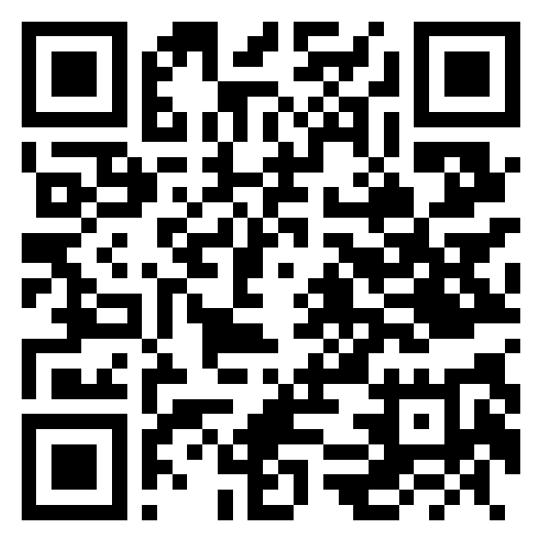

🍔 Caixa da Cantina
Guia rápido para quem vai cuidar do caixa
benjamim-bot.github.io/caixa-cantina

Aponte a câmera
1. Instalar (só uma vez, com internet)
Android
- Abra o link no Chrome.
- Toque no botão Instalar que aparece no app.
Se não aparecer: toque nos 3 pontinhos ⋮ e em Adicionar à tela inicial.
iPhone
- Abra o link no Safari.
- Toque em Compartilhar (quadrado com seta ↑).
- Toque em Adicionar à Tela de Início.
Computador
- Abra o link no Chrome ou Edge.
- Clique em Instalar no app (ou no ícone de instalar na barra de endereço).
Pronto: aparece o ícone Cantina na tela. A partir daí, abra sempre por ele. Funciona sem internet.
2. No domingo
- Abrir a cantina: escreva o nome do ministério e o que vai vender (ex.: “Combo + refri”), com o preço e quantos foram feitos. Toque em Abrir caixa.
- Vender: toque no lanche → escolha Pix, Débito, Crédito ou Dinheiro → toque em Pago.
No dinheiro, digite quanto a pessoa deu e o app mostra o troco.
- Pessoa vai pagar depois: toque em Paga depois e escreva o nome dela.
- No final: toque em Fechar caixa. Aparece o relatório: toque em Imprimir / Salvar PDF e mande para a liderança. Se preferir, Planilha (CSV) abre no Excel.
3. Situações do dia a dia
| A pessoa que devia veio pagar | Aba Resumo → Receber → escolha como ela pagou. |
| Baixar o preço (ex.: últimas unidades) | Toque no lápis ✎ do lanche e mude o preço. Só vale daqui pra frente. |
| Desconto só para uma pessoa | Antes de tocar em Pago, toque no preço da linha (ex.: “R$ 10,00 un”). |
| Fizeram mais lanches | Toque no lápis ✎ e aumente a quantidade. |
| Registrei uma venda errada | Aba Resumo → toque no X da venda. O lanche volta para o estoque. |
| Mudar tema (claro/escuro) | Botão ⚙ no topo → Aparência. |
No computador não tem a aba Resumo: ele já aparece do lado direito da tela.
4. Onde ficam as vendas?
As vendas ficam salvas no próprio aparelho onde o app está sendo usado, seja celular, tablet ou computador. Nada vai para a internet.
- Pode fechar o app, desligar o aparelho e abrir de novo: nada se perde.
- Cada aparelho tem as suas vendas. O que foi feito no celular não aparece no computador (e vice-versa). No computador, cada navegador (Chrome, Edge, Firefox) também guarda separado.
- Só se perde se alguém limpar os dados do navegador ou usar janela anônima.
⚠ ImportanteUse o mesmo aparelho do começo ao fim da cantina. No final, salve o PDF do relatório e mande para a liderança: ele é o registro oficial.